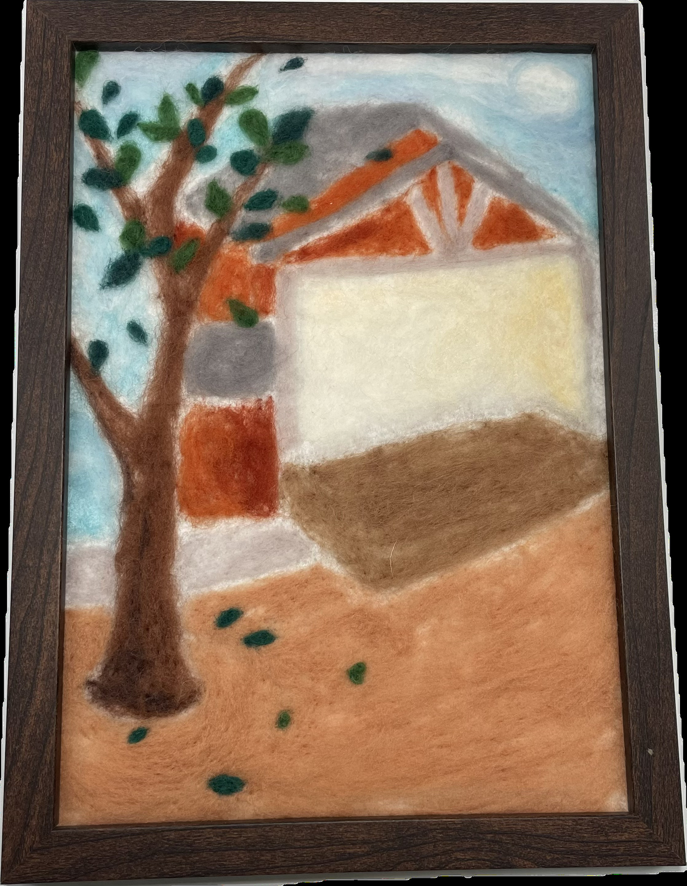

作品名稱：紅樓
作者姓名：陳郁晴
作品主題：紅樓
作品敘述：我的創作主題圍繞著學校的紅樓，這不僅是校園內一座具有象徵意義的歷史建築，更是我心中珍貴的回憶來源。令外，我選擇由側面描繪紅樓，因為高二時的教室就位於其附近，每當我從教室走出來，總能一眼望見這座宏偉的建築。這樣的景色不僅讓我感受到學校的歷史底蘊，也喚起了我對那段時光的懷念。
My creative theme revolves around the Red Building of the school, which is not only a historically significant architectural symbol on campus but also a precious source of memories in my heart. Additionally, I chose to depict the Red Building from the side because my classroom was located nearby during my sophomore year. Every time I stepped out of the classroom, I could see this magnificent building at a glance. This scenery not only made me feel the historical depth of the school but also evoked my nostalgia for that period of time.